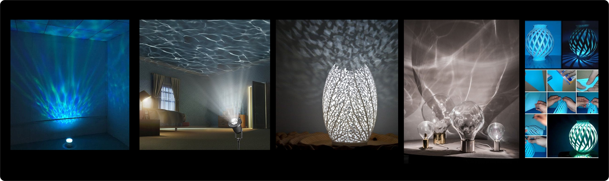
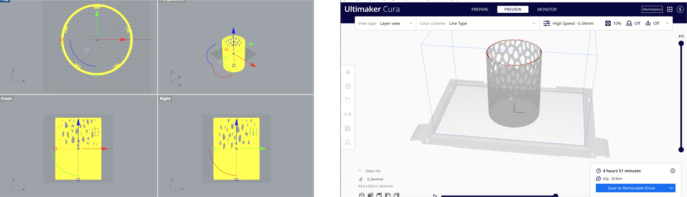
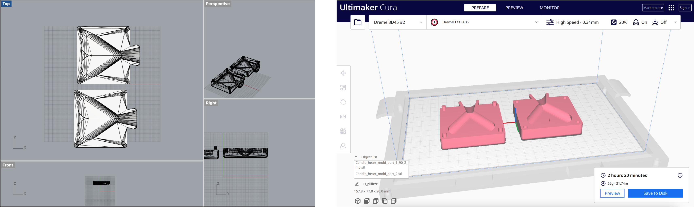

Lamps part 2, And molding and casting part 1!
Assignment 5
Part 1 : Your final lamps 💡

Coming from an idea that cat loves boxes, I came up with an idea to combine stl mesh of a sitting cat and a box. I found this cute cat stl modeling at Thinggivers and downloaded it to modify the mesh. I imported the mesh file (stl format) in to Rhino and change the display and texture. And then I reduced the meshes to decrease the number of poly faces. I used the MeshToNurb command to create a closed mesh model.


Then I found this cute Mario box in Thingivers and then reduced the mesh to decrease the polygon surfaces. The box size was too big for the cat model, so I scaled down the box to make the cat fit in. And then, I combined the two meshes into one figure and imported them to CURA to see whether they were ready to be printed in a single figure. It turned out that the two meshes combined and closed well

Part 2 : Design Lamp Innered 💡
For the lamp innered design,I collected some images and references to create a moodboard for inspiration and ideas. I have a blue color filament, so by using it, I want to have a lamp that creates a shadow of waves.
Moodboard & Inspiration

Lamp Measurement

To design the lamp innereds that can be exactly fit in to the lamp, I used calipers to measure the size and length of the current lamp structure.
Lamp Design

This is the initial sketch of the lamp design. I want to put the wave pattern in the outside of the lamp holder, so it can reflect the shadow of the lamp. I put the small empty space in the bottom of the innereds to pull out the wire extension and make the lamp stand on the ground.
Lamp Modeling

Lamp Printing


I exported the model into Cura. For the 3D printing, I used the 3D printer in the mill, which is Dremel ECO ABS. For the priniter setting, I set the quality as "High Speed", 10% Infill.
Appendix
Link to the modified mesh Stl file (stl) by. Soo Hwang Link to the Lamp Innered File (stl) by. Soo Hwang